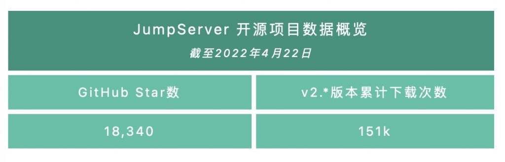
2022年4月25日，JumpServer开源堡垒机正式发布v2.21.0版本。在这一版本中，JumpServer新增Magnus组件，支持用户以数据库代理直连的方式连接数据库，用户可以使用任意数据库管理工具（例如Navicat、SQLyog等）进行直连操作。同时，新版JumpServer支持分布式策略访问资产，用户可自定义资产连接时指定使用的服务端点。
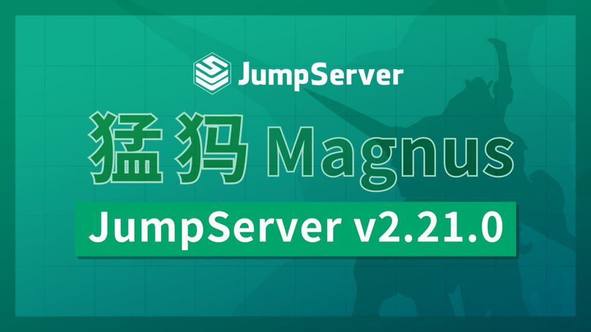
另外，在这一版本中，JumpServer还新增支持纳管MongoDB数据库，支持通过拉起SSH客户端的方式连接Linux资产，支持通过企业微信、钉钉进行免密登录，支持用户使用临时密码进行登录，从而方便第三方用户使用临时密码通过Terminal登录到JumpServer。
X-Pack增强包方面，在同步云资产模块中，JumpServer除了支持阿里云、腾讯云、华为云、AWS（中国）、AWS（国际）、Azure（中国）、Azure（国际）、谷歌云、VMware、青云私有云、华为私有云、OpenStack、Nutanix等云平台以外，还新增支持百度云、京东云，满足了企业在多云资产纳管方面的实际需求，协助用户实现对私有云、公有云资产的统一纳管。
同时，新版JumpServer还支持用户的工作台区分组织，用户可以通过切换组织，获取该组织所授权的对应资源。另外，在改密计划中，JumpServer新增支持资产改密计划切换用户后执行改密操作。
新增功能
1. 新增Magnus组件，支持数据库代理直连方式连接数据库
在JumpServer v2.21.0版本中，新增Magnus组件，支持数据库代理直连方式连接数据库，用户可以使用任意数据库管理工具（例如Navicat、SQLyog等）进行直连操作。
Magnus是JumpServer的数据库安全连接组件，支持多种数据库协议，使用Golang实现，其名字来源于“Dota”游戏中的英雄——猛犸。
目前，Magnus组件支持的数据库有MySQL、MariaDB、PostgreSQL（X-Pack）。用户可通过Web终端点击数据库，选择“DB Client”连接方式，获取数据库连接信息。用户可以点击拉起客户端按钮，直连数据库；也可以复制命令行连接信息，到Terminal执行命令去连接数据库；还可以使用数据库管理工具（例如Navicat、SQLyog等）连接数据库。
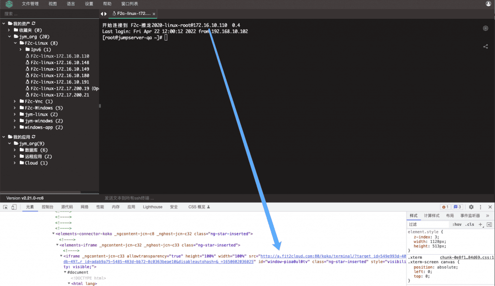
2. 支持分布式策略访问资产
在JumpServer v2.21.0版本中，新增支持分布式策略访问资产。管理员可在“系统设置”→“终端设置”中创建服务端点和端点规则，通过编辑端点规则，设置IP段连接时指定使用的服务端点。
具体步骤如下：
步骤一：创建两个服务端点，分别是：a.fit2cloud.com和b.fit2cloud.com；
步骤二：创建端点规则，例如172.16.10.110，指定使用a.fit2cloud.com服务端点；
步骤三：创建端点规则，例如172.16.10.191，指定使用b.fit2cloud.com服务端点；
步骤四：用户在Web Luna分别连接172.16.10.110、172.16.10.191两个资产，查看其连接时使用的服务端点。
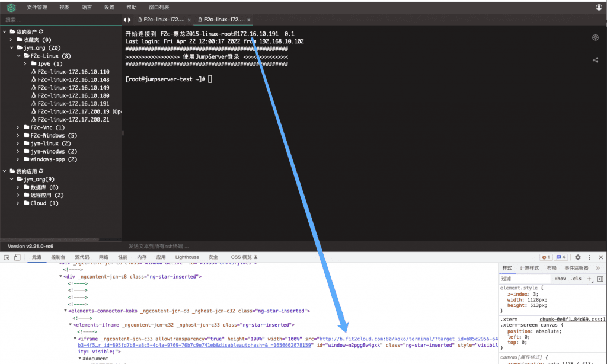
3. 新增支持纳管MongoDB非关系型数据库
在JumpServer v2.21.0版本中，新增对MongoDB非关系型数据库的管理、连接、操作和审计功能。用户可以选择“应用管理”→“数据库”，创建MongoDB数据库，授权该数据库，并在Web终端或Terminal终端进行连接使用。
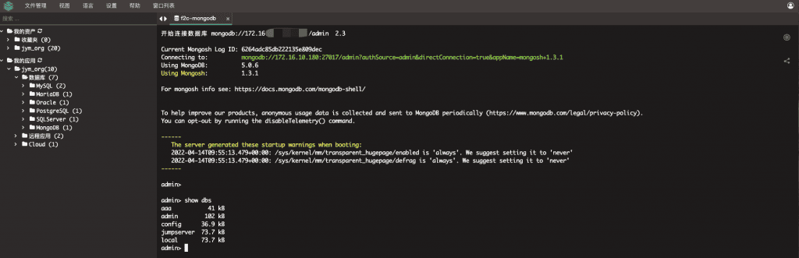
4. 支持通过拉起SSH客户端的方式连接Linux资产
在JumpServer v2.21.0版本中，新增支持通过拉起SSH客户端的方式连接Linux资产。用户在Web终端点击Linux资产，选择“SSH Client”连接方式，即可拉起本地Terminal客户端连接Linux资产。注意：Windows系统需要根据提示下载Putty。
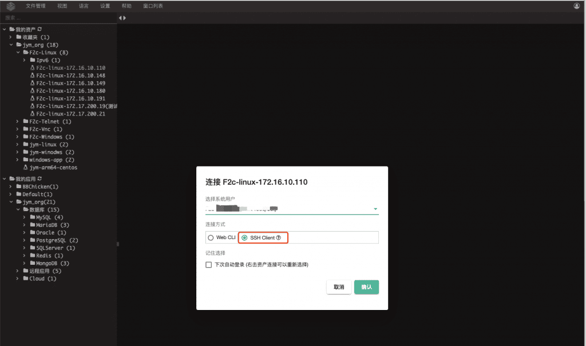
5. 支持通过企业微信、钉钉进行免密登录
在JumpServer v2.21.0版本中，支持通过企业微信、钉钉进行免密登录。管理员需要在企业微信、钉钉的开发者后台配置好应用地址。以钉钉为例，JumpSever用户绑定钉钉后，用户使用钉钉工作台点击应用，即可免密登录JumpServer。
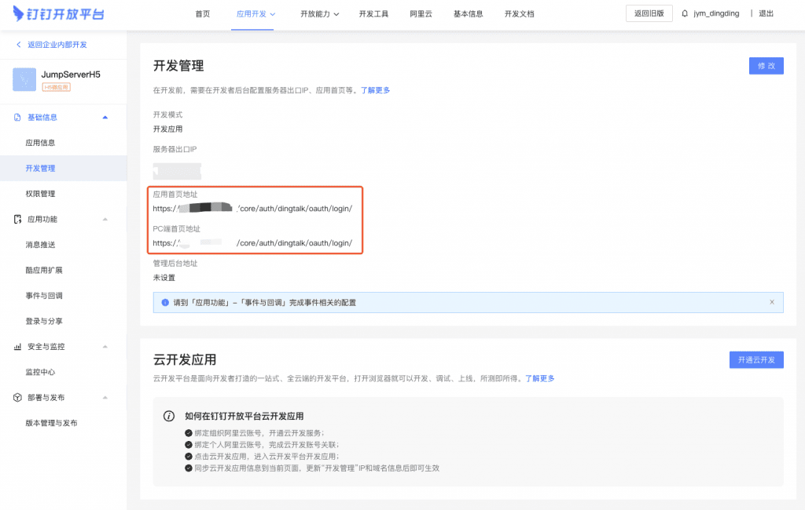
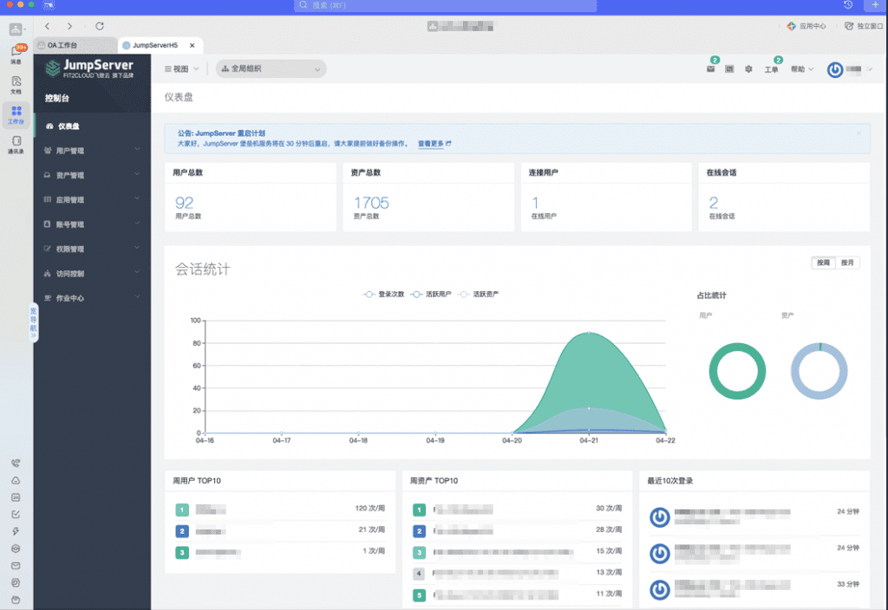
6. 支持使用临时密码登录
在JumpServer v2.21.0版本中，支持用户使用临时密码登录JumpServer。用户可在“个人信息”→“临时密码”页面中进行创建，临时密码的有效期为300秒，有效期内可重复使用。这样一来，第三方认证用户可以很方便地创建临时密码，并使用Terminal终端登录JumpServer进行资产操作。
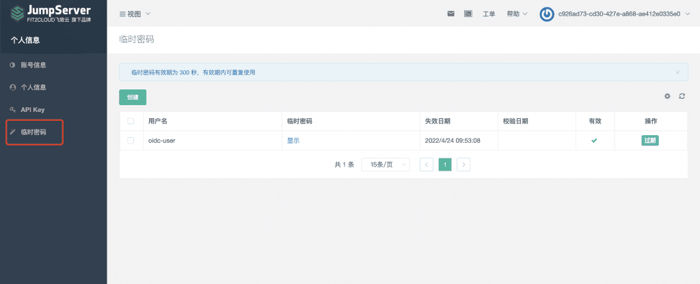
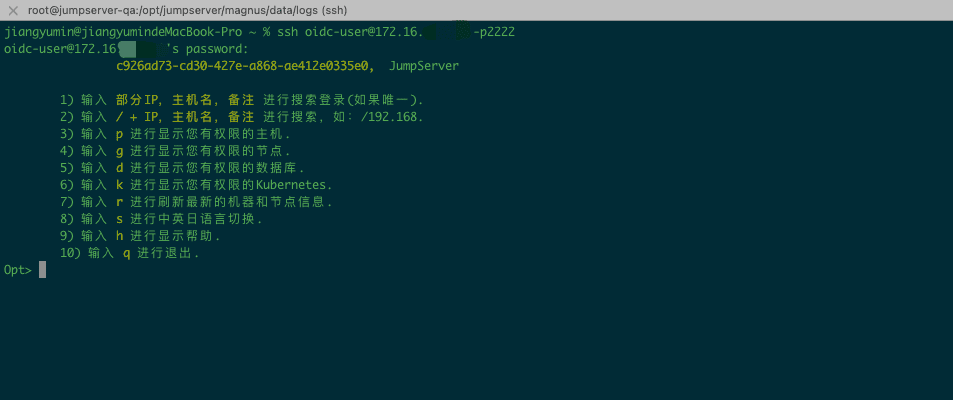
7. 新增支持纳管百度云、京东云资产（X-Pack增强包内）
在JumpServer v2.21.0版本中，新增支持纳管百度云、京东云资产。目前，JumpServe支持的云平台除了阿里云、腾讯云、华为云、AWS（中国）、AWS（国际）、Azure（中国）、Azure（国际）、谷歌云、VMware、青云私有云、华为私有云、OpenStack、Nutanix以外，还支持百度云、京东云，满足了企业在多云资产纳管方面的实际需求，协助用户实现对私有云、公有云资产的统一纳管。
用户可在“云同步”→“账号列表”中点击创建京东云、百度云账号，并创建同步实例任务，即可定时同步云资产。
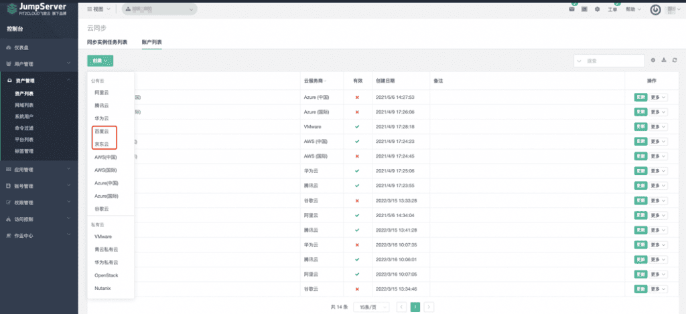
8. 支持工作台区分组织（X-Pack增强包内）
在JumpServer v2.21.0版本中，支持工作台区分组织。用户可以通过切换组织，获取该组织所授权的对应资源。
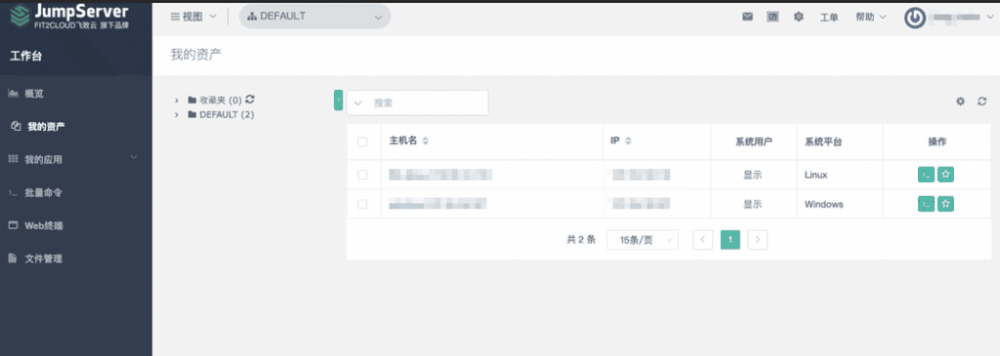
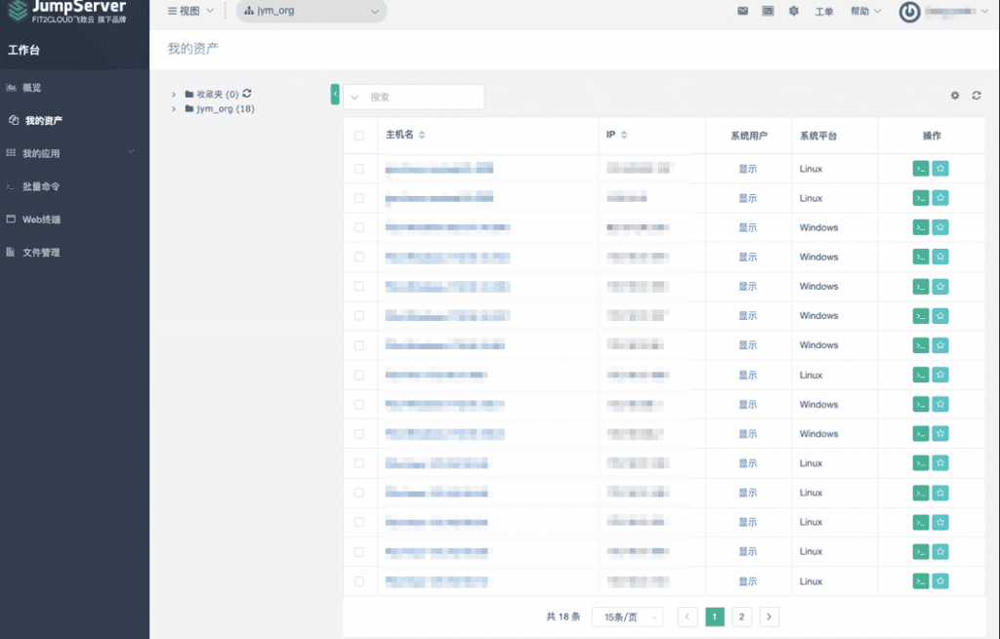
9. 支持资产改密计划切换用户后执行改密操作（X-Pack增强包内）
在JumpServer v2.21.0版本中，支持资产改密计划切换用户后执行改密操作。这一功能解决了一些用户在实际应用场景中遇到的问题，比如因禁止使用高权限用户进行登录而造成无法改密的情况。
管理员可以创建普通用户的系统用户，设置可切换至“Root”。这样一来，在执行资产改密时，就可以切换至Root特权用户进行改密。
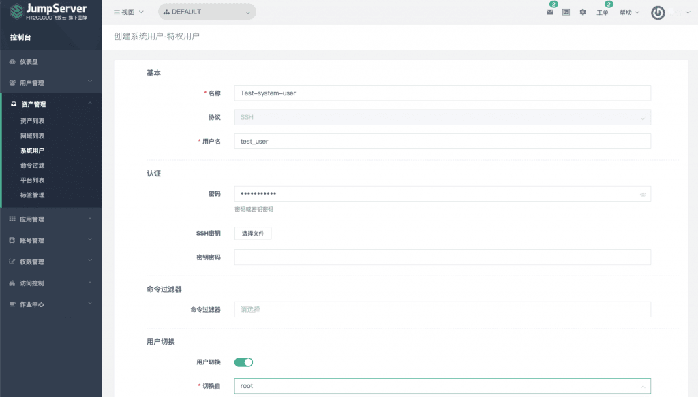
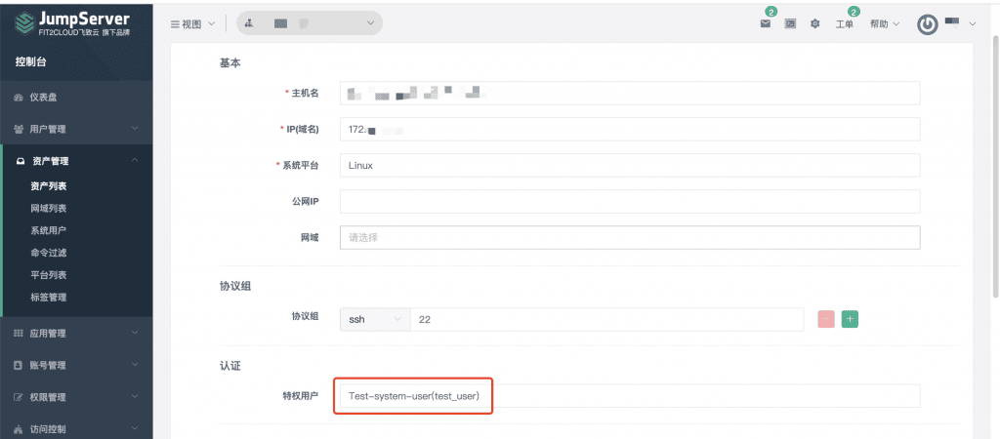
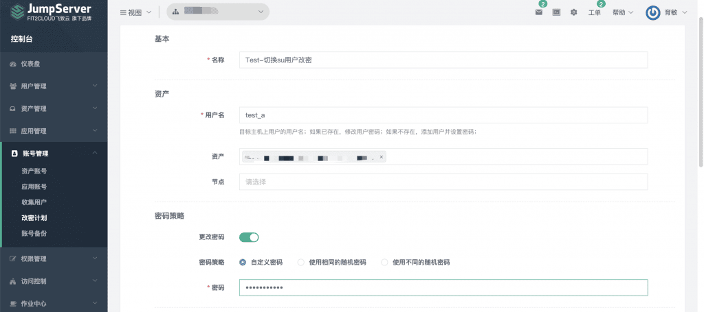
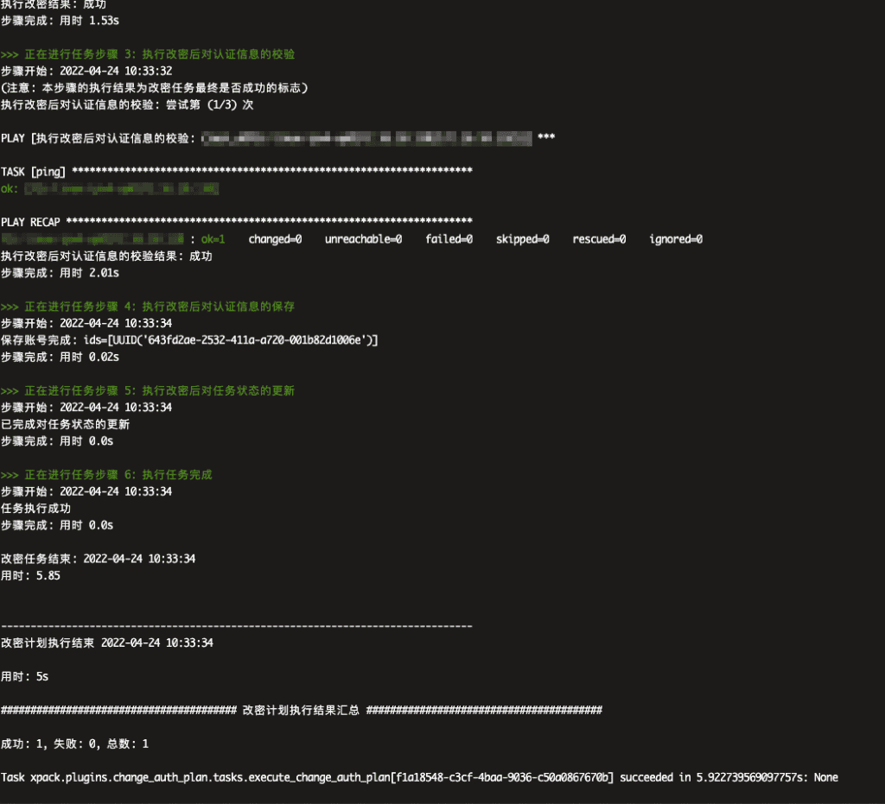
功能优化
■ 支持部署使用SSL Redis数据库；
■ 支持日语国际化；
■ 优化站内信支持一键已读的功能；
■ 优化连接OpenSSH 8.0协议资产时遇到的连接问题；
■ Web连接MySQL数据库时增加禁用、自动补全参数-a；
■ 优化连接Windows资产时的窗口大小问题；
■ 优化命令记录输入字段长度的问题；
■ 优化资产序列编号字段长度的问题；
■ 优化移动端页面显示和视图切换体验；
■ 优化LDAP认证配置，支持指定组织定时同步用户（X-Pack增强包内）。
Bug修复
■ 修复仪表盘用户数量不准确的问题；
■ 修复API Docs访问失败的问题；
■ 修复一些已知权限位的控制问题；
■ 修复系统组件的角色绑定问题；
■ 修复VMware同步实例ID为“None”时同步失败的问题；
■ 修复系统设置消息订阅不能更新的问题；
■ 修复远程应用认证信息获取错误的问题（X-Pack增强包内）。
依赖升级
■ paramiko==2.10.1
■ Pillow==9.0.1
■ bce-python-sdk==0.8.64